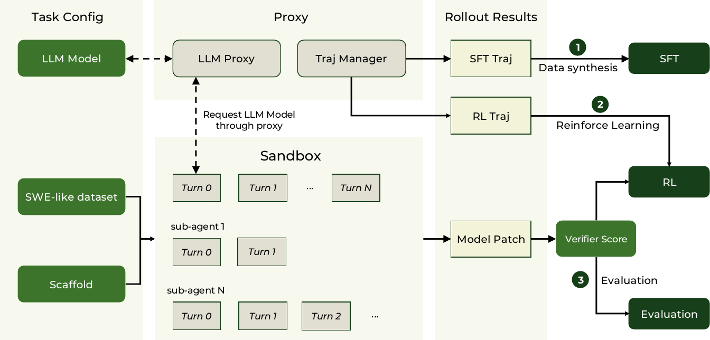
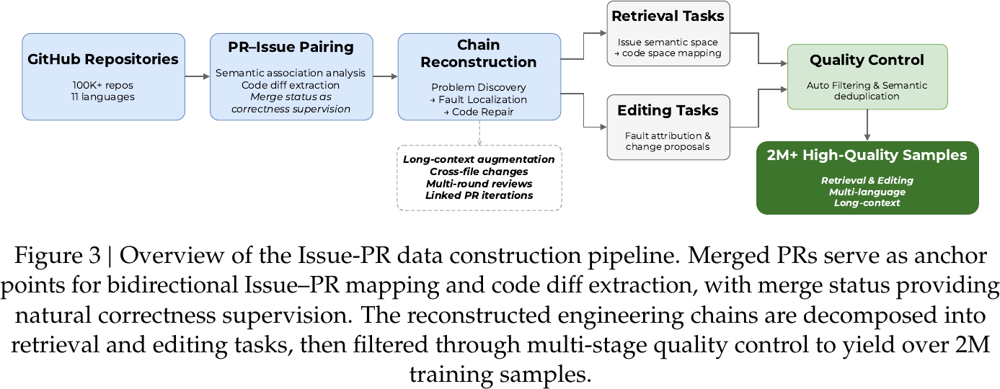
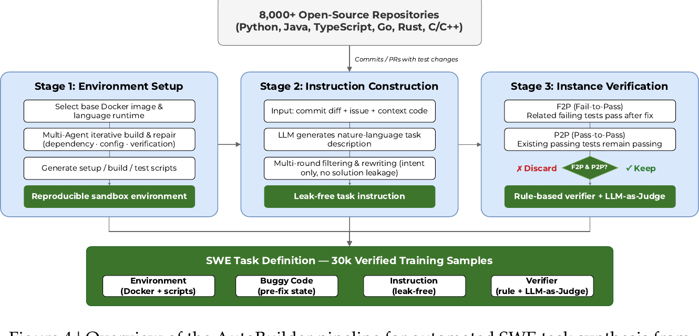
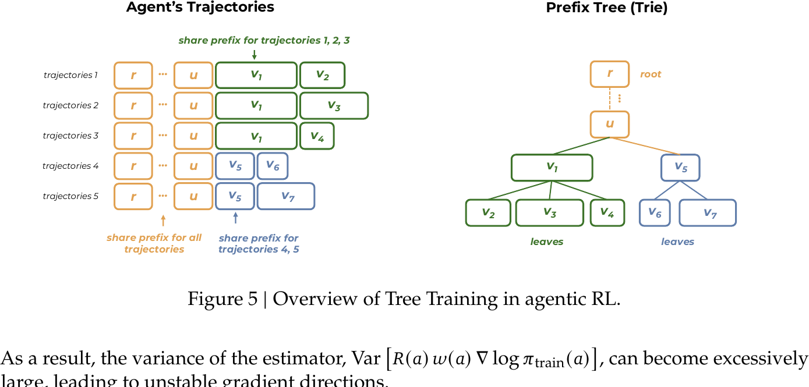
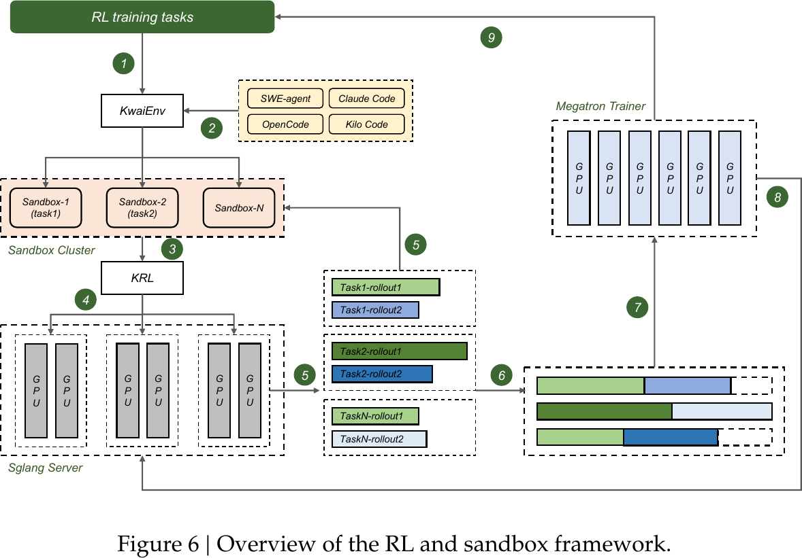
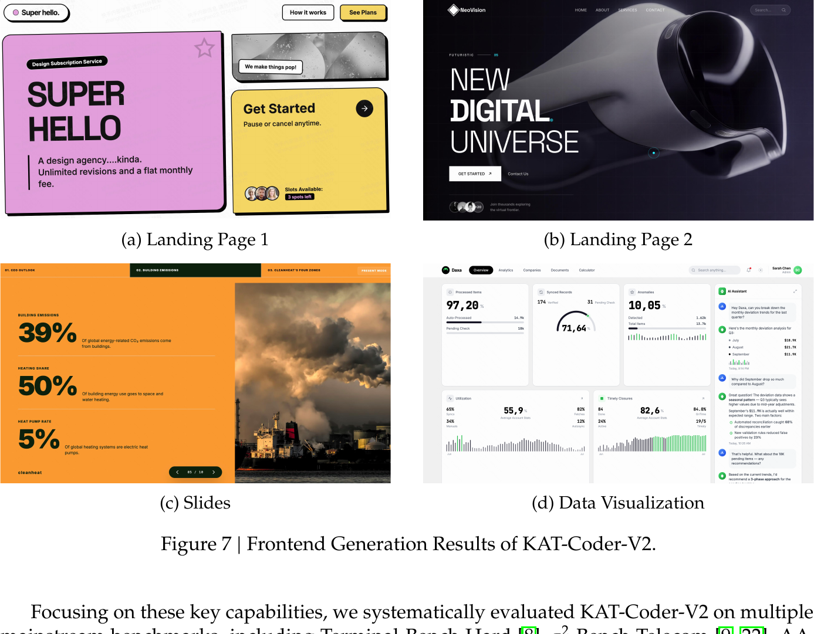

KAT-Coder-V2 Technical Report
摘要与基本信息
KAT-Coder-V2 是快手 KwaiKAT 团队发布的 agentic coding 模型。整篇报告围绕一个核心范式展开：Specialize-then-Unify——把 agentic coding 分解为 SWE、WebCoding、Terminal、WebSearch、General 五个专家领域，各自独立做 SFT 与 RL，最终通过 on-policy distillation 融合为单一可部署模型。
为了支撑这一训练流程，团队构建了模块化基础设施 KwaiEnv，支持万级并发 sandbox。算法层面提出 MCLA（稳定 MoE RL 训练）与 Tree Training（消除树形轨迹冗余计算，加速 6.2×）。
主要实验结果
- SWE-bench Verified：79.6%（Claude Opus 4.6 为 80.8%）
- PinchBench：88.7，超越 GLM-5 与 MiniMax M2.7
- 前端美学（Landing Page / Slides / Data Visualization）三项第一
- Terminal-Bench Hard：46.8，τ²-Bench：93.9
1. Introduction
Agentic Coding 区别于传统 code QA 的关键在于：模型需要在真实代码仓库里完成多轮工具调用、依赖管理、执行反馈接入的长 horizon 工作流，优化目标从"单轮代码正确性"变为"端到端工程结果"。
论文作者把走到这一目标面前的障碍凝练为三个根本性挑战，并逐一给出对应的对策：
三个挑战 → 三个对策
| 挑战（论文原文） | 具体含义 | KAT-Coder-V2 的对策 |
|---|---|---|
| ① Capability Fragmentation 能力碎片化 |
SWE 需要基于测试验证的长链代码编辑；WebCoding 需要在稀疏口语输入下做美学判断；Terminal 需要持续的环境状态追踪。各领域训练信号不仅不同，而且常常冲突——单一 pipeline 无法同时在所有领域达到最优。 | Specialize-then-Unify 范式：把能力谱系分解为 5 个正交专家领域（SWE / WebCoding / Terminal / WebSearch / General），各自独立做数据构造 + SFT + RL，最后通过 OPD 融合——以 on-policy 探索避免 exposure bias，以专家提供 dense step-level 监督。 |
| ② Infrastructure Coupling 基础设施耦合 |
Agentic RL 训练同时要求高吞吐 sandbox 编排、异构 benchmark 支持、与快速演化的 agent scaffold 生态（Claude Code / OpenClaw / OpenCode …）的无缝兼容。现有系统把这些关切紧耦合在一起，每接入一个新 scaffold 或数据集都需要昂贵的工程改造。 | KwaiEnv 模块化基础设施：解耦 Dataset / Sandbox / Scaffold / Verifier 四大关切，支撑万级并发 sandbox。核心工程决策是用网络代理层拦截 LLM 请求——任何 agent 只需改 API endpoint 即可接入，零源码改动。 |
| ③ Scaling Agentic RL Agentic RL 扩展难 |
有效训练 coding agent 需沿多维度同时 scaling——任务复杂度、prompt 多样性、scaffold 泛化——同时要处理 MoE 架构带来的训练不稳定，以及树形多轮轨迹带来的计算冗余。 | Agentic Scaling 范式 + 两项算法创新：沿三个维度系统 scaling，产出 100K+ 高难度 RL 样本；提出 MCLA（Monte-Carlo Log-probability Averaging）降低 log-prob 估计方差以稳定 MoE RL；提出 Tree Training 消除树形轨迹冗余计算，训练加速最高 6.2×。 |
作者明确把这三对"挑战 → 对策"作为整篇报告的叙事主线：§2 展开 KwaiEnv，§3 展开 Specialize-then-Unify 范式与三个 RL 算法/工程创新，§4 给出实验验证。
2. KwaiEnv 基础设施
KwaiEnv 的设计哲学是 Separation of Concerns：把 agentic RL 训练中的五个关注点（数据、验证、脚手架、沙箱、轨迹）解耦为独立模块，通过标准接口通信，任一模块都可独立替换或迭代。
2.1 Figure 2 · KwaiEnv Workflow
论文的 Figure 2 把五个模块在一次完整 rollout 中的协作关系讲清楚了——这张图是理解后续所有训练与评估流程的地图。

围绕 Figure 2 的逐步讲解
这张图的关键是：五个模块并不是两两耦合，而是通过 LLM Proxy 这一个中心枢纽编排。整个 rollout 从左上角的 Task Config 开始，最终分流到右侧三个出口——这正是 KwaiEnv 能同时支撑 SFT、RL、Evaluation 三种工作模式的结构原因。
- Task Config 下发配置 用户通过一份 YAML/JSON 配置文件声明任务参数——数据集、目标 LLM、scaffold 类型、验证器策略。KwaiEnv 读取配置后即开始自动编排，无需人工介入。
- LLM Proxy 作为统一网络代理 这是 KwaiEnv 最关键的工程决策。所有 Coding Agent 的 LLM 调用都经过 LLM Proxy 转发到 LLM Model。这带来两个直接收益：一，任何 agent 只要把 API base_url 指向 Proxy 就能接入，无需修改源码；二，Proxy 在转发的同时自然地拦截并记录了完整交互轨迹。
-
Sandbox 执行 rollout
LLM Proxy 把任务分派到 Sandbox——大规模并发隔离容器（万级量级）。Sandbox 内部由 Scaffold 驱动，产生若干 sub-agent，每个 sub-agent 会运行多个 turn（Turn 0 → Turn 1 → … → Turn N）。
注意图中两个 sub-agent 的 turn 数不同（一个 N turn，一个 3 turn）——这刻画了现代 agent 轨迹的树形异构结构。这正是 §3.4 Tree Training 要优化的对象。 - SWE-like dataset + Scaffold 作为输入 Sandbox 底部接收两类输入：SWE-like dataset 提供 repo / issue / test cases 等任务素材；Scaffold 提供 agent 逻辑（Claude Code / Kilo Code / OpenClaw / …）。两者可自由组合，因此同一份任务可以在多个 scaffold 下生成多份 trajectory——这支撑了 §3.3.1 Agentic Scaling 里的 scaffold generalization 维度。
- Trajectory Manager 汇聚并格式化 整个 rollout 过程中 LLM Proxy 记录下所有 I/O、tool-call、token 使用、时间戳，交给 Trajectory Manager。Trajectory Manager 按下游用途 reorder、truncate、重组，输出到三条独立通道。
-
三条出口对应三种工作模式
① SFT Traj → Data Synthesis → SFT：生成监督微调数据；
② RL Traj → Reinforcement：适配不同 RL 算法（GSPO / Turn-level / GRPO 等）的输入规范；
③ Model Patch + Verifier Score → Evaluation：对照金标 patch 或调用 SWE 官方 scoring 得到评估指标。
2.2 Dataset 模块
集成 SWE-bench、LiveCodeBench、SWE-bench Pro 等公开基准与内部数据。通过统一抽象接口屏蔽不同数据源在 task 格式、容器镜像、scoring 机制上的差异。使用者只需实现接口，无需关心上游如何产生数据。
2.3 Verifier 模块
提供三类互补的验证策略：
- 确定性评分：对照金标 patch 或 test cases
- LLM-as-Judge + Rubric：用于主观质量评估（如前端美学）
- 官方 SWE Scoring：直接调用 benchmark 的官方评估模块
2.4 Scaffold 模块
这是 KwaiEnv 最关键的工程决策。Scaffold 模块黑盒集成 10+ 个开源 coding agent（Claude Code、OpenClaw、OpenCode、Kilo Code、Cline 等）。
实现方式是网络代理层拦截 LLM 请求：任何通过 HTTP 调用 LLM API 的 agent，只需把 base_url 指向 KwaiEnv 代理，即可被纳入训练与评估流程，无需修改 agent 源码。
这一设计直接支撑了后续的 multi-scaffold 训练策略。
2.5 Sandbox 模块
基于快手 Wanqing 容器云平台，支持 10000+ 并发隔离容器，可实现秒级触发。这是整个 RL 流程的算力底座——大规模 rollout 必须依赖这种规模的沙箱能力。
2.6 Trajectory Manager
负责收集、格式化、输出轨迹。针对 SFT 和 RL 两类算法的输入规范差异，提供不同的格式化策略。
3. Training Recipe
3.1 Specialize-then-Unify 范式
整个训练流程分三个阶段：
Phase 1: 5 × SFT (五个领域各自训练专家模型) Phase 2: 5 × RL (在 KwaiEnv 上各自做环境反馈 RL) Phase 3: OPD 融合 (五个专家蒸馏为单一可部署模型)
五个专家领域的选择基于部署场景的直接需求：SWE（代码修改与工程）、WebCoding（前端 UI 生成）、Terminal（命令行操作）、WebSearch（检索与信息聚合）、General（通用指令与推理）。
3.2 五个专家的 SFT 数据
SWE Expert · 三个互补 pipeline
Issue-PR Pipeline（2M+ 样本）：从 100K+ repos × 11 种语言中挖掘 PR 与 Issue，用 embedding 余弦相似度配对，merge status 作为 correctness 监督。输出长上下文 cross-file 的 retrieval + editing 任务。

AutoBuilder Pipeline（30K verified 样本）：针对 8000+ repos × 6 种语言，由三个 agent 协作（Dependency Agent / Environment Agent / Build Verification Agent）自动构建可运行 sandbox，LLM 生成 leak-free 任务指令，F2P + P2P 双验证。

Code Comprehension Pipeline：7 阶段 trajectory synthesis，6 种 question types × 4 个 difficulty levels，Claude Code Agent 在 Docker 中自主探索（上限 150 turns），产出中英双语数据。
WebCoding Expert · 解决"美学坍塌"问题
论文指出训练后前端模型容易生成模板化、视觉层次扁平的 UI（aesthetic collapse）。两个核心策略：
Tri-Perspective Label System：构建 7 层结构化映射 L₁ → L₇，从用户感知（L₁）到技术实现（L₇）。日常输入往往只覆盖 L₁，模型需要自回归推断其余层次。
Prompt Rewriting：同一份 HTML 配三种 prompt 变体——designer（>1000 词，含色板栅格动效）、professional（200–300 词，产品经理级）、ordinary（~50 词，真实用户口吻）。这让模型学会从稀疏输入恢复完整设计意图。
其余三个专家
| Expert | 规模 | 关键策略 |
|---|---|---|
| Terminal | 100K+ × 10 语言 | 专家标注 + 20+ 并行 agent 合成 + SWE→Terminal 格式转换 + CLI-Gym/TermiGen 整合 |
| WebSearch | 100K+ | 知识图谱多跳子图采样 + Pass@8 过滤保留中等难度 + 三条件拒绝采样 |
| General | 未披露 | compositional instruction following + multi-turn QA + code-math reasoning（online judge 验证） |
3.3 RL 算法创新
3.3.1 Agentic Scaling：RL 数据的三个维度
传统 RL 数据大多是"简单 QA + 静态环境"。KAT-V2 沿三个维度系统性扩展：
- Task Complexity：用 frontier 闭源模型作为 teacher + judge，显式过滤容易任务，只保留需要反思和迭代的高难度实例。
- Intent Alignment：一个 commit 对应多个 prompt 变体（详细专家指令 → 模糊口语查询），训练模型从噪声真实输入中推断工程意图。
- Scaffold Generalization：同一任务用多个 scaffold（黑盒 Claude Code / OpenCode / Kilo Code，白盒 SWEagent）训练，培养 scaffold-agnostic 行为。
最终 RL 数据形式化为五元组：
分别对应：环境、工具集、脚手架、任务指令、验证器。总规模 100K+ RL 样本。
3.3.2 Modified Turn-level GSPO
动机：这一节的设计来自对两种主流 policy optimization 算法的权衡。
GRPO（token-level importance sampling）——importance ratio 定义在每个 token 粒度：
优点是 token 粒度信号最细；但在长 horizon agent 场景里，逐 token 的 ratio 会把方差累积到整个序列，训练容易发散。
GSPO（sequence-level importance sampling）——用整条序列的长度归一化后的几何平均作为单一 ratio：
把所有 token 的 ratio 合成一个，方差显著缩减；代价是整条序列只剩一个 clip 判定——agent 在某一 turn 里犯错、其它 turn 做对，优化信号被粗粒度的整体 ratio 平均掉，turn 级 credit assignment 变得模糊。
KAT-V2 的折中 · Modified Turn-level GSPO：把生成序列 $y$ 按 scaffold-specific markers 划分为 $N$ 个 turn（每个 turn $T_n$ 是一段连续的 token 集合），在每个 turn 内做序列级 ratio、turn 之间再平均：
直观理解这三个算法的粒度关系：
| 算法 | ratio 粒度 | clip 单位 | 方差 | Credit 分配 |
|---|---|---|---|---|
| GRPO | 每个 token | 逐 token | 高（长序列累积） | 最细 |
| GSPO | 整条序列（几何平均） | 整条序列 1 次 | 低 | 粗（整条共享信号） |
| Turn-level GSPO | 每个 turn（段内连乘） | 逐 turn | 中（turn 内缩减） | 中（对齐 MDP） |
这样既保留了 sequence-level 的方差缩减，又在 turn 边界处恢复了 fine-grained credit assignment——每个 turn 对应 agent 一次完整 action block（推理 + 工具调用 + 观察），与 LLM Agent 的 MDP 结构天然对齐。Turn 边界基于 scaffold-specific markers 动态定义，因此这套算法天然支持多 scaffold 数据混合训练。
3.3.3 MCLA · Monte-Carlo Logprob Averaging
问题诊断：MoE RL 不稳定不仅源于 policy mismatch，更重要的是 trajectory log-probability 估计本身有高方差。MoE 架构的 stochastic expert routing、capacity dropping、数值方差都会让 log-prob 估计偏离真值：
这会让 importance weight $w(a) = \exp(\log \pi_{\text{rollout}}(a) - \log \pi_{\text{train}}(a))$ 方差爆炸，梯度方向失稳。
解法：对每个 trajectory 做 $K=8$ 次 forward pass prefetch，把 log-probability 平均：
MCLA 从源头降低估计方差，与 IcePop（clip 高 discrepancy token）互补。论文报告训练稳定性、收敛速度、最终性能均显著提升。
代价：每个 trajectory 多做 8 次 forward，意味着训练计算开销显著增加。论文未公开总训练成本。
3.4 Agentic Engineering
3.4.1 Tree Training · 6.2× 加速
动机：现代 agent scaffold 的 sub-agent 分叉、并行 tool calls、context 选择性保留让 trajectory 是树形而非线性的。论文 Figure 5 把这一结构讲得很清楚——左侧是平铺后的 5 条 trajectory，右侧是同一组数据的 Prefix Tree 视角：

朴素的做法是把树展平为多条独立 root-to-leaf 序列独立训练，这样r…u 这类共享前缀会在每条序列的 forward+backward 中被重复计算，训练成本随分支度线性增长。
方法：
- 整棵 trajectory tree 通过 DFS 展平为单一序列
- 对 per-token 应用 loss weight 重新加权
- 数学上：由 differentiation 的线性性，产生的梯度精确等价于对所有 root-to-leaf 路径独立训练的梯度之和，只额外引入可忽略的 element-wise scalar 乘法
实现组件（基于 FlashAttention V3）：
- Tree-structured attention mask：限制 token attention 在自身 root-to-leaf 路径内
- Per-token position IDs：恢复 token 在原序列中的位置
- Gradient scaling weights
在真实 agentic RL rollout 上实测 6.2× end-to-end 训练加速。
3.4.2 高并发 Sandbox 训练框架
除了 Tree Training 在单条 rollout 内部消除冗余，论文还给出了系统层面的高并发异步流水线——把 sandbox 集群、SGLang 推理集群、Megatron 训练集群三者解耦，用 KRL router 做动态负载均衡，让 rollout 生成与梯度更新在时间上重叠。Figure 6 展示了完整的 9 步循环：

论文把这 9 步描述为一个统一循环（对照 Figure 6 的编号）：
- Instance Sampling——从数据集中采样一个可执行的任务 batch。
- Agent Allocation——KwaiEnv 为每个 sample 指派一个 scaffold（SWE-agent / Claude Code / OpenCode / Kilo Code），并把执行请求派发到远程 sandbox 集群。
- Sandbox Initialization——Wanqing 容器云动态供给 Docker 隔离环境，每个 sandbox 封装一条执行轨迹，开始向 SGLang 推理引擎发起请求。
- Request Routing——KRL router 在多个 SGLang 推理 server 之间做严格负载均衡。
- Rollout Generation——SGLang 迭代产生 batch_size × group_size 条 trajectory；多 turn 场景下模型与 sandbox 交互直至任务完成、turn 上限或时间约束触发。
- Reward Computation——按任务规则或 verifier 模型评估 rollout，计算 advantage 并做 trajectory packing。
- Engine Switching——执行一次关键的 live context switch：把 GPU 资源从 SGLang 推理服务切给 Megatron 训练服务。
- Parameter Optimization——用 packed trajectory 做策略更新；更新后的权重再同步回 SGLang server。
- Iteration——整条循环立即进入下一个 batch。
这套异步循环配合 Tree Training 的 6.2× 单 rollout 加速，共同构成 KAT-V2 能稳定跑通 100K+ RL 样本、多 scaffold、多 turn 训练的工程底座——论文没有给出这套框架单独的加速比数字，但把它与 Tree Training 合称为 "Agentic Engineering"，并明确指出两者共同解决了 RL 训练随分支度线性放大的成本问题。
3.5 OPD · On-Policy Distillation 融合
五个专家各自训练完后，如何融合为单一可部署模型？论文先排除三种 baseline：
| 方案 | 失败原因 |
|---|---|
| Weight averaging | Catastrophic forgetting |
| 纯 RL | 奖励太稀疏，无法定位中间推理错误 |
| Off-policy SFT | Exposure bias（学生看不到自己会犯的错） |
OPD 解法：
- Student 模型在混合领域 prompt 上主动生成完整 trajectory
- 联合优化两种 loss：
- RL loss：环境提供 sparse grounding reward，保证最终任务成功
- OPD loss：为每个 task 动态选择最强专家作为 Teacher，专家评估 Student 的 on-policy rollout，通过 log-probabilities 提供 dense step-level 监督
- 避免 expensive full-logit distillation，提供 unbiased 优化目标
论文坦承单模型融合不可避免存在轻微性能下降（capacity constraints + cross-domain interference），但 joint optimization 有效缓解 catastrophic forgetting。
4. Evaluation
4.1 SWE 多 scaffold 表现（Table 2）
表中 KAT-V2 所有数字均在 KwaiEnv 上重新评估；带 * 的 Claude Opus 4.6 数字来自 Anthropic 官方公告，未经本文环境复现。
| Benchmark | Scaffold | KAT-V2 | Claude Opus 4.6 |
|---|---|---|---|
| SWE-bench Verified | Claude Code | 79.6 | 80.8* |
| OpenCode | 74.8 | 75.0 | |
| OpenClaw | 72.8 | 75.7 | |
| SWE-bench Multilingual | Claude Code | 75.4 | 77.8* |
| OpenCode | 71.2 | 70.2 | |
| SWE-rebench-V2 | Claude Code | 43.3 | 43.7 |
| OpenCode | 38.7 | 37.3 |
三个观察点：
- SWE-bench Verified 79.6% 紧逼 Claude Opus 4.6（80.8%）
- 跨 scaffold 表现稳定（79.6 / 74.8 / 72.8），印证 scaffold-agnostic 训练有效
- 在无污染基准 SWE-rebench-V2 上整体接近 Claude Opus 4.6，说明不是 SWE-bench 过拟合
4.2 Real-World Agent Benchmarks（Table 3）
| Benchmark | Metric | KAT-V2 | GLM-5 | MiniMax M2.7 | Claude Opus 4.6 | GPT-5.4 |
|---|---|---|---|---|---|---|
| PinchBench | Best | 88.7 | 86.4 | 87.1 | 87.4 | 90.5 |
| Average | 81.9 | 80.3 | 81.8 | 82.3 | 81.6 | |
| Claw-Eval | Pass³ | 55.6 | 57.7 | 51.9 | 66.3 | 66.3 |
| Average | 73.4 | 73.0 | 70.7 | 79.3 | 80.6 |
PinchBench Best 达到 88.7，超越多个开源 frontier 模型；Claw-Eval 落后 Claude / GPT-5.4 约 10 个百分点，论文结尾明确承认。
4.3 前端美学（Table 4）
| Scenario | KAT-V2 | GLM-5 | Kimi K2.5 |
|---|---|---|---|
| Landing Page | 59.8 | 57.6 | 54.6 |
| Slides | 57.6 | 42.8 | 34.8 |
| Data Visualization | 67.6 | 42.4 | 46.0 |
三项场景全部第一。Slides 比 GLM-5 高 14.8pp，Data Visualization 高 25.2pp——WebCoding Expert 的 Tri-Perspective Label System + Prompt Rewriting 是差距的主要来源。

评估方法本身也是论文贡献：这是首个 reference-free 的 Text-to-UI 美学评测基准。Landing Page 评估包含 10 个维度（Layout / Typography / Color / Font / Image / Background / Elements / Components / Interaction / Animation）× 4 层（Structural / Visual / Component / Dynamic），0–5 分制，由专业 UI/UX 设计师盲评，标准化条件为 Chrome 1920×1080。
4.4 General 任务（Table 5）
| Benchmark | KAT-V2 | GLM-5 | Claude Opus 4.6 | GPT-5.4 | Gemini 3.1 Pro |
|---|---|---|---|---|---|
| Terminal-Bench Hard | 46.8 | 43.2 | 46.2 | 57.6 | 53.8 |
| τ²-Bench Telecom | 93.9 | 98.2 | 92.1 | 91.5 | 95.6 |
| AA-LCR | 68.0 | 63.3 | 70.7 | 74.0 | 72.7 |
| IFBench | 67.0 | 72.3 | 53.1 | 73.9 | 77.1 |
Terminal-Bench Hard 落后 GPT-5.4 约 11pp，IFBench 落后 Gemini 3.1 Pro 约 10pp。论文坦承这反映"specialize"的代价——领域专家化会牺牲部分 general 能力。
5. Conclusion
KAT-Coder-V2 给出的完整答案包含三层：
- 范式层：Specialize-then-Unify 证明多领域 agent 可以通过"先分、后合"的两阶段训练达到单一领域专家水平，再通过 OPD 融合为可部署模型。
- 基础设施层：KwaiEnv 的五模块解耦 + 网络代理 scaffold 接入 + 万级沙箱构成了工业级 agentic RL 的算力与接口底座。
- 算法层：Modified Turn-level GSPO 在 token 级与序列级之间取得工程折中；MCLA 通过 K=8 forward pass 平均降低 log-prob 估计方差，稳定 MoE RL；Tree Training 通过梯度等价性证明把树形轨迹训练成本摊平，外加高并发异步 sandbox 循环，共同构成"Agentic Engineering"。
论文同时诚实披露了主要局限：
- 未公开模型规模（仅说明"基于 KAT-V1"）
- 未公开训练计算成本（MCLA K=8 forward pass 代价显著）
- Specialize-then-Unify 缺与 joint training 的 head-to-head ablation
- OPD "动态选择最强专家"的具体机制未详述
- Claw-Eval 等 real-world 任务上仍落后 Claude / GPT-5.4 约 10pp
- General 任务上的专家化代价明显
作者把这些作为下一步工作的方向，并特别提出：下一代扩展可能在于 reasoning 与 agentic behavior 的更深融合。